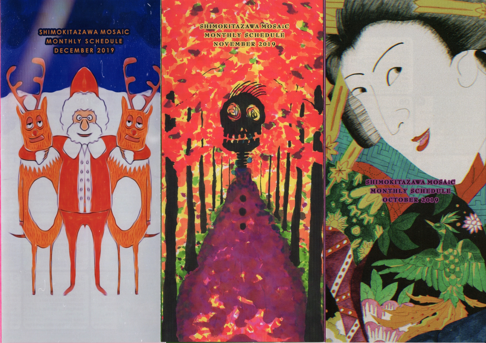

＜Works＞

下北沢MOSAiC
- 2020.01～03MonthlySchedule Cover -

下北沢MOSAiC
- 2019.10～12MonthlySchedule Cover -

下北沢MOSAiC
- 2019.07～09MonthlySchedule Cover -

下北沢MOSAiC
- 2019.04～06MonthlySchedule Cover -

下北沢MOSAiC
- 2019.01～03MonthlySchedule Cover -

下北沢MOSAiC
- 2018.10～12MonthlySchedule Cover -

下北沢MOSAiC
- 2018.07～09MonthlySchedule Cover -

下北沢MOSAiC
- 2018.04～06MonthlySchedule Cover -